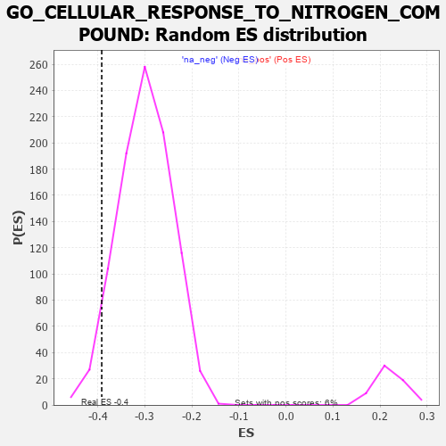

| | | Dataset | 7d |
| Phenotype | NoPhenotypeAvailable |
| Upregulated in class | na_neg |
| GeneSet | GO_CELLULAR_RESPONSE_TO_NITROGEN_COMPOUND |
| Enrichment Score (ES) | -0.3916444 |
| Normalized Enrichment Score (NES) | -1.3083568 |
| Nominal p-value | 0.041577823 |
| FDR q-value | 0.46441564 |
| FWER p-Value | 1.0 |
Table: GSEA Results Summary
 Fig 1: Enrichment plot: GO_CELLULAR_RESPONSE_TO_NITROGEN_COMPOUND
Fig 1: Enrichment plot: GO_CELLULAR_RESPONSE_TO_NITROGEN_COMPOUND
Profile of the Running ES Score & Positions of GeneSet Members on the Rank Ordered List
| PROBE | GENE SYMBOL | GENE_TITLE | RANK IN GENE LIST | RANK METRIC SCORE | RUNNING ES | CORE ENRICHMENT | | 1 | IRS1 | | | 98 | 1.659 | 0.0065 | No |
| 2 | ADCY8 | | | 124 | 1.418 | 0.0195 | No |
| 3 | CASP6 | | | 145 | 1.300 | 0.0319 | No |
| 4 | CSRP3 | | | 161 | 1.186 | 0.0435 | No |
| 5 | KLF11 | | | 318 | 0.788 | 0.0326 | No |
| 6 | GSK3A | | | 351 | 0.745 | 0.0370 | No |
| 7 | LRP1 | | | 470 | 0.648 | 0.0294 | No |
| 8 | APEX1 | | | 577 | 0.604 | 0.0227 | No |
| 9 | CDC6 | | | 709 | 0.557 | 0.0123 | No |
| 10 | ID1 | | | 719 | 0.555 | 0.0175 | No |
| 11 | BLM | | | 804 | 0.531 | 0.0129 | No |
| 12 | HDAC5 | | | 900 | 0.506 | 0.0065 | No |
| 13 | MEN1 | | | 1003 | 0.483 | -0.0010 | No |
| 14 | AKT1 | | | 1040 | 0.476 | -0.0001 | No |
| 15 | MEF2C | | | 1054 | 0.473 | 0.0036 | No |
| 16 | AP3S1 | | | 1063 | 0.471 | 0.0080 | No |
| 17 | AIFM1 | | | 1072 | 0.469 | 0.0123 | No |
| 18 | RAD51 | | | 1090 | 0.466 | 0.0155 | No |
| 19 | G6PC | | | 1121 | 0.459 | 0.0169 | No |
| 20 | SRC | | | 1128 | 0.459 | 0.0214 | No |
| 21 | GAB1 | | | 1158 | 0.453 | 0.0229 | No |
| 22 | UBR2 | | | 1334 | 0.423 | 0.0053 | No |
| 23 | P2RY1 | | | 1416 | 0.407 | -0.0004 | No |
| 24 | GPT | | | 1488 | 0.392 | -0.0050 | No |
| 25 | INHBB | | | 1514 | 0.388 | -0.0037 | No |
| 26 | SOS1 | | | 1547 | 0.384 | -0.0034 | No |
| 27 | CDK4 | | | 1626 | 0.370 | -0.0091 | No |
| 28 | BACE1 | | | 1673 | 0.360 | -0.0109 | No |
| 29 | FMR1 | | | 1816 | 0.334 | -0.0252 | No |
| 30 | NCOA5 | | | 1884 | 0.322 | -0.0301 | No |
| 31 | GLRA2 | | | 1892 | 0.321 | -0.0273 | No |
| 32 | FOXO4 | | | 2004 | 0.304 | -0.0381 | No |
| 33 | KCNC2 | | | 2075 | 0.295 | -0.0436 | No |
| 34 | C2CD5 | | | 2204 | 0.276 | -0.0569 | No |
| 35 | CDK2 | | | 2226 | 0.272 | -0.0564 | No |
| 36 | CREB1 | | | 2243 | 0.269 | -0.0554 | No |
| 37 | CDC5L | | | 2353 | 0.253 | -0.0664 | No |
| 38 | SIN3A | | | 2361 | 0.251 | -0.0645 | No |
| 39 | KDM1A | | | 2447 | 0.237 | -0.0726 | No |
| 40 | KAT2B | | | 2502 | 0.226 | -0.0769 | No |
| 41 | PDE12 | | | 2608 | 0.211 | -0.0880 | No |
| 42 | RTF2 | | | 2615 | 0.210 | -0.0863 | No |
| 43 | GRB14 | | | 2666 | 0.204 | -0.0904 | No |
| 44 | DDI2 | | | 2691 | 0.200 | -0.0912 | No |
| 45 | SLIT2 | | | 2724 | 0.195 | -0.0930 | No |
| 46 | XRN1 | | | 2786 | 0.185 | -0.0987 | No |
| 47 | FER | | | 2803 | 0.183 | -0.0987 | No |
| 48 | SYAP1 | | | 2811 | 0.182 | -0.0975 | No |
| 49 | PCK2 | | | 2823 | 0.180 | -0.0968 | No |
| 50 | WDTC1 | | | 2865 | 0.172 | -0.1001 | No |
| 51 | RAB10 | | | 2952 | 0.157 | -0.1093 | No |
| 52 | ANO1 | | | 2982 | 0.152 | -0.1113 | No |
| 53 | AHR | | | 3175 | 0.126 | -0.1344 | No |
| 54 | RAB8A | | | 3319 | 0.102 | -0.1515 | No |
| 55 | EPG5 | | | 3368 | 0.094 | -0.1566 | No |
| 56 | PPAT | | | 3382 | 0.091 | -0.1572 | No |
| 57 | CDK5 | | | 3480 | 0.080 | -0.1687 | No |
| 58 | RGS8 | | | 3490 | 0.079 | -0.1690 | No |
| 59 | PQBP1 | | | 3526 | 0.072 | -0.1726 | No |
| 60 | TNS2 | | | 3588 | 0.062 | -0.1797 | No |
| 61 | MAPK3 | | | 3589 | 0.062 | -0.1790 | No |
| 62 | FIS1 | | | 3654 | 0.051 | -0.1866 | No |
| 63 | DHX9 | | | 3693 | 0.044 | -0.1910 | No |
| 64 | HSF1 | | | 3718 | 0.039 | -0.1936 | No |
| 65 | DAXX | | | 3722 | 0.038 | -0.1935 | No |
| 66 | HTR1B | | | 3745 | 0.035 | -0.1960 | No |
| 67 | LPIN3 | | | 3751 | 0.034 | -0.1962 | No |
| 68 | IFIH1 | | | 3919 | 0.006 | -0.2175 | No |
| 69 | GLRA1 | | | 3957 | 0.001 | -0.2222 | No |
| 70 | IGF1R | | | 3970 | -0.002 | -0.2238 | No |
| 71 | VPS35 | | | 3989 | -0.006 | -0.2260 | No |
| 72 | DDX58 | | | 3998 | -0.007 | -0.2269 | No |
| 73 | PARP1 | | | 4014 | -0.010 | -0.2287 | No |
| 74 | PDE4B | | | 4089 | -0.022 | -0.2379 | No |
| 75 | MTOR | | | 4114 | -0.025 | -0.2407 | No |
| 76 | ABL1 | | | 4125 | -0.027 | -0.2417 | No |
| 77 | CRK | | | 4139 | -0.031 | -0.2430 | No |
| 78 | RRAGD | | | 4183 | -0.039 | -0.2481 | No |
| 79 | SESN1 | | | 4192 | -0.041 | -0.2486 | No |
| 80 | RRAGA | | | 4223 | -0.046 | -0.2519 | No |
| 81 | RPTOR | | | 4252 | -0.050 | -0.2550 | No |
| 82 | USF1 | | | 4296 | -0.059 | -0.2598 | No |
| 83 | TSHR | | | 4322 | -0.063 | -0.2623 | No |
| 84 | OPA1 | | | 4330 | -0.065 | -0.2624 | No |
| 85 | ADRB2 | | | 4352 | -0.068 | -0.2643 | No |
| 86 | LRRK2 | | | 4467 | -0.087 | -0.2779 | No |
| 87 | NTRK2 | | | 4543 | -0.104 | -0.2863 | No |
| 88 | APC | | | 4558 | -0.107 | -0.2869 | No |
| 89 | RAP1B | | | 4706 | -0.140 | -0.3041 | No |
| 90 | CPEB2 | | | 4709 | -0.141 | -0.3027 | No |
| 91 | MYO5A | | | 4787 | -0.155 | -0.3108 | No |
| 92 | P2RX4 | | | 4813 | -0.161 | -0.3121 | No |
| 93 | USO1 | | | 4855 | -0.168 | -0.3155 | No |
| 94 | SIK2 | | | 4875 | -0.172 | -0.3159 | No |
| 95 | ATRX | | | 4929 | -0.184 | -0.3206 | No |
| 96 | CHMP5 | | | 4952 | -0.188 | -0.3212 | No |
| 97 | PRKDC | | | 4955 | -0.189 | -0.3193 | No |
| 98 | AOC1 | | | 4993 | -0.197 | -0.3218 | No |
| 99 | KLF4 | | | 5005 | -0.198 | -0.3209 | No |
| 100 | CASP7 | | | 5038 | -0.206 | -0.3227 | No |
| 101 | PDPK1 | | | 5043 | -0.207 | -0.3208 | No |
| 102 | DRD2 | | | 5088 | -0.221 | -0.3239 | No |
| 103 | DDX11 | | | 5102 | -0.225 | -0.3230 | No |
| 104 | IPO5 | | | 5207 | -0.248 | -0.3335 | No |
| 105 | IDE | | | 5252 | -0.258 | -0.3361 | No |
| 106 | SSH1 | | | 5254 | -0.258 | -0.3333 | No |
| 107 | PTEN | | | 5262 | -0.261 | -0.3312 | No |
| 108 | EPHA4 | | | 5273 | -0.265 | -0.3295 | No |
| 109 | FOLR2 | | | 5563 | -0.336 | -0.3626 | No |
| 110 | LARP1 | | | 5616 | -0.349 | -0.3652 | No |
| 111 | CIB2 | | | 5774 | -0.398 | -0.3808 | No |
| 112 | ATG7 | | | 5858 | -0.420 | -0.3866 | Yes |
| 113 | RAB13 | | | 5870 | -0.425 | -0.3831 | Yes |
| 114 | KCNQ1 | | | 5918 | -0.441 | -0.3841 | Yes |
| 115 | ACTN2 | | | 5960 | -0.458 | -0.3841 | Yes |
| 116 | GABPA | | | 5977 | -0.464 | -0.3808 | Yes |
| 117 | XBP1 | | | 6011 | -0.475 | -0.3796 | Yes |
| 118 | FBN1 | | | 6080 | -0.499 | -0.3826 | Yes |
| 119 | ROCK1 | | | 6152 | -0.520 | -0.3857 | Yes |
| 120 | EGR1 | | | 6165 | -0.527 | -0.3812 | Yes |
| 121 | KLF2 | | | 6182 | -0.532 | -0.3771 | Yes |
| 122 | INSR | | | 6204 | -0.538 | -0.3737 | Yes |
| 123 | FLOT1 | | | 6276 | -0.564 | -0.3763 | Yes |
| 124 | TRPM4 | | | 6390 | -0.612 | -0.3837 | Yes |
| 125 | RALB | | | 6399 | -0.617 | -0.3777 | Yes |
| 126 | CSK | | | 6428 | -0.630 | -0.3740 | Yes |
| 127 | VAMP2 | | | 6525 | -0.672 | -0.3786 | Yes |
| 128 | KANK1 | | | 6536 | -0.678 | -0.3721 | Yes |
| 129 | OTOP1 | | | 6562 | -0.690 | -0.3674 | Yes |
| 130 | PAK1 | | | 6691 | -0.757 | -0.3751 | Yes |
| 131 | EGFR | | | 6708 | -0.765 | -0.3684 | Yes |
| 132 | GSK3B | | | 6719 | -0.768 | -0.3609 | Yes |
| 133 | HCN1 | | | 6895 | -0.865 | -0.3734 | Yes |
| 134 | GHSR | | | 6937 | -0.894 | -0.3684 | Yes |
| 135 | PDE2A | | | 6985 | -0.927 | -0.3638 | Yes |
| 136 | DDC | | | 7019 | -0.950 | -0.3571 | Yes |
| 137 | NR4A1 | | | 7022 | -0.951 | -0.3464 | Yes |
| 138 | GRM5 | | | 7053 | -0.969 | -0.3392 | Yes |
| 139 | CSH1 | | | 7098 | -0.995 | -0.3334 | Yes |
| 140 | CFTR | | | 7143 | -1.030 | -0.3272 | Yes |
| 141 | HCN4 | | | 7260 | -1.134 | -0.3291 | Yes |
| 142 | KLF5 | | | 7429 | -1.304 | -0.3356 | Yes |
| 143 | TAF1 | | | 7643 | -1.633 | -0.3442 | Yes |
| 144 | HCN2 | | | 7662 | -1.668 | -0.3274 | Yes |
| 145 | TRPM2 | | | 7680 | -1.712 | -0.3099 | Yes |
| 146 | ADCY1 | | | 7695 | -1.752 | -0.2916 | Yes |
| 147 | ADCY9 | | | 7704 | -1.783 | -0.2722 | Yes |
| 148 | GNRHR | | | 7714 | -1.811 | -0.2526 | Yes |
| 149 | CASP3 | | | 7747 | -1.902 | -0.2349 | Yes |
| 150 | PDE4D | | | 7764 | -1.944 | -0.2147 | Yes |
| 151 | PKD2 | | | 7822 | -2.167 | -0.1971 | Yes |
| 152 | SP1 | | | 7840 | -2.321 | -0.1727 | Yes |
| 153 | TRAF2 | | | 7861 | -2.481 | -0.1468 | Yes |
| 154 | MMP2 | | | 7875 | -2.574 | -0.1190 | Yes |
| 155 | FYN | | | 7881 | -2.622 | -0.0896 | Yes |
| 156 | CAV3 | | | 7896 | -2.739 | -0.0600 | Yes |
| 157 | PLCB1 | | | 7904 | -2.841 | -0.0283 | Yes |
| 158 | VWA2 | | | 7927 | -3.205 | 0.0056 | Yes |
Table: GSEA details [plain text format]

Fig 2: GO_CELLULAR_RESPONSE_TO_NITROGEN_COMPOUND: Random ES distribution
Gene set null distribution of ES for GO_CELLULAR_RESPONSE_TO_NITROGEN_COMPOUND